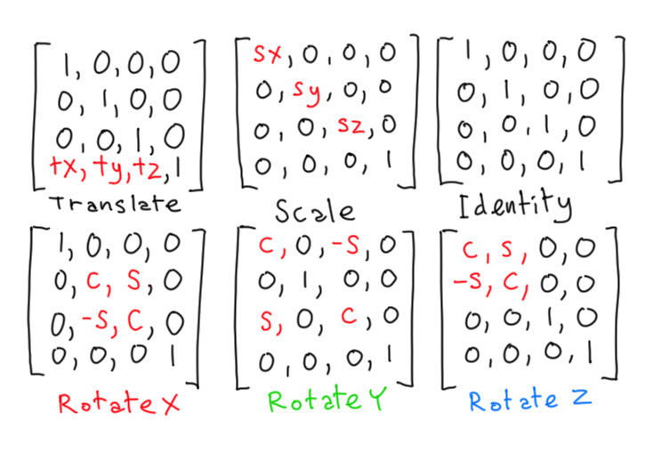
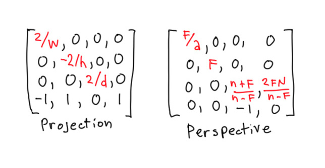

About WebGL
Bobby RoeWhat is it?
Based on OpenGL ES 2.0
(maps closely to the GPU)
"The web has a history of transformative changes.
CSS gave us real web design, Flash gave us ubiquitous video, Firebug gave us Web Inspectors, jQuery gave us non-painful DOM manipulation, and so on. None of these ideas were new in computing when they debuted, the web merely adapted to fill a need. WebGL is an idea in a similar vein, a base platform for an ecosystem of specialized frameworks on top." - Steven Wittens
Overview
- Intro to the WebGL DOM API
- 2D / 3D; Whatever
- Bring your own matrices
- GLSL examples
- do stuff
- references
Intro
2006
some concepts
ex: context.drawThis(); // done.
• buffers, switches, state, load-compile-link-use, etc …
Essentials of 3D Graphics
Eric Haines Class on Udacity2D / 3D; whatever
basic workflow
get a context
create *shaders & program
VBOs (& IBOs)
draw
2D Example (triangle)
(triangle animated)
Bring your own matrices
model
projection & perspective
GLSL
some examples
the programmable part of the GL pipeline
what is it?
like c / c++ with helpers for CG(built-in matrices / vectors / functions)
gl_Position & gl_FragColor
The programable part of the pipeline

normals & lighting
normals & lighting example
other effects (wireframe)
load texture example
other effects (toon)
ex: does not like to mix ints & floats
Do stuff
Use Three.js
links
- watch these: www.udacity.com/course/cs291
- and this: games.greggman.com/game/webgl-how-it-works
- learningwebgl.com/blog/?page_id=1217
- www.shadertoy.com
- acko.net/blog/making-mathbox (webgl usage)
stuff to explore:
- post-processing (images effects w/ FBOs)
- shadows
- more shader programming
- clickable stuff - ray-casting
- particle effects
- optimisations